Ruhige Tage: Schnorcheln in der Bucht – ein kleiner Schwarzspitzen-Riffhai zieht direkt unter der Oberfläche vorbei. Dazu Som Tam, scharfer Papayasalat, in einem offenen Holzpavillon mit Blick bis zum Meer, und jeden Abend der Sonnenuntergang von der Terrasse.
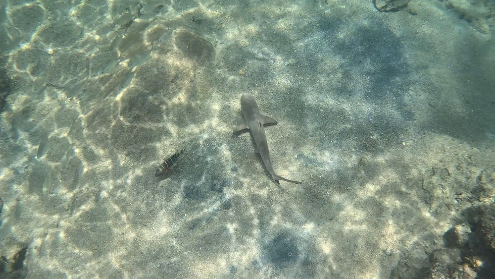
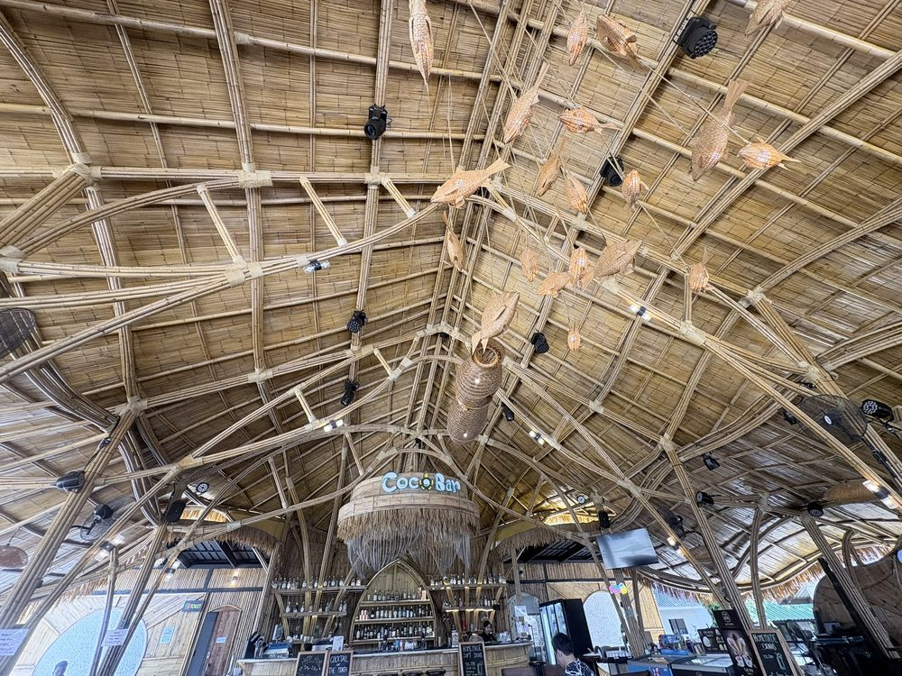
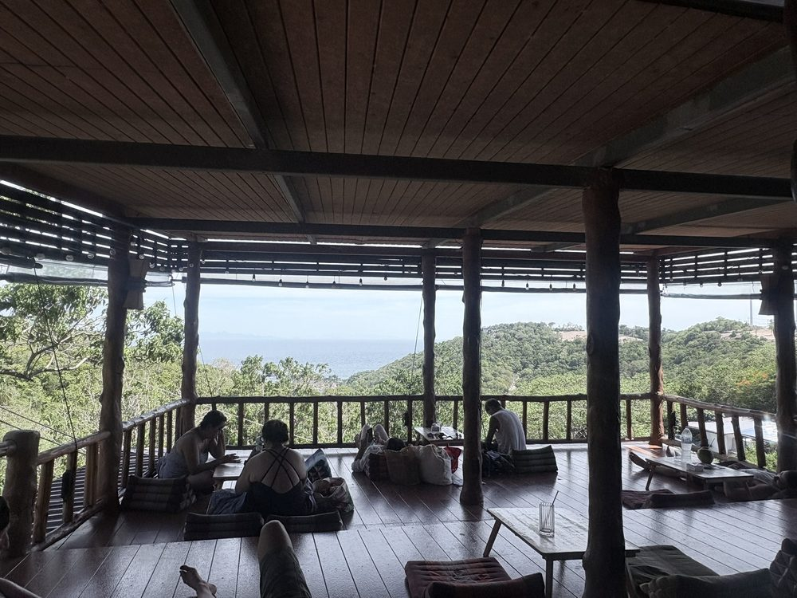
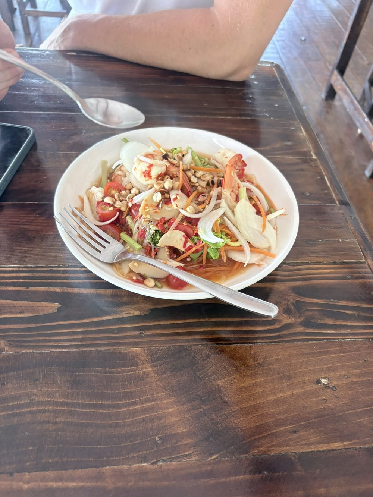
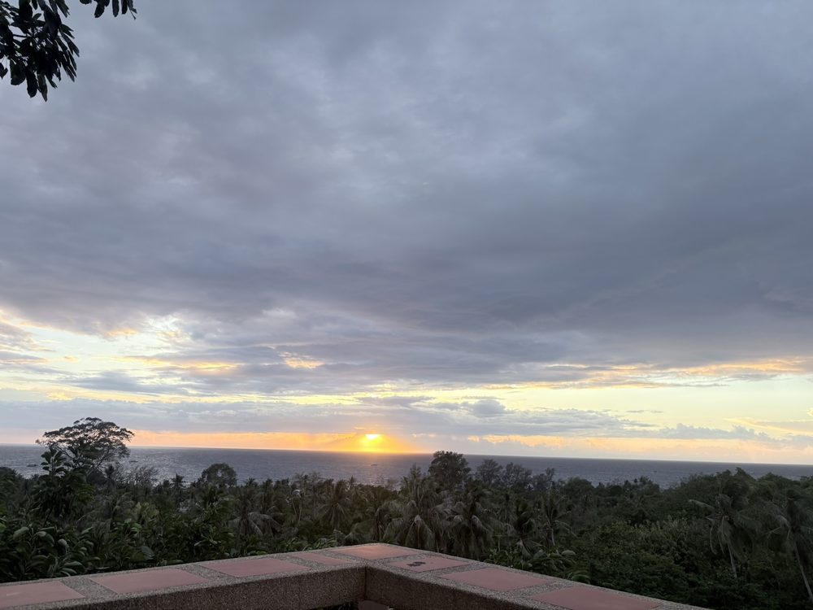
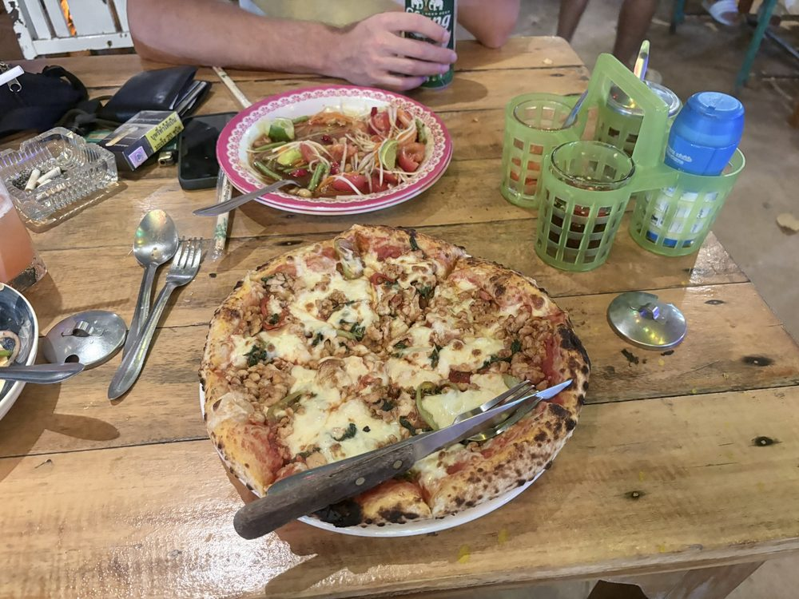
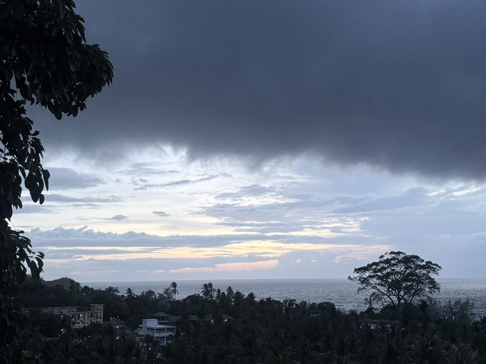
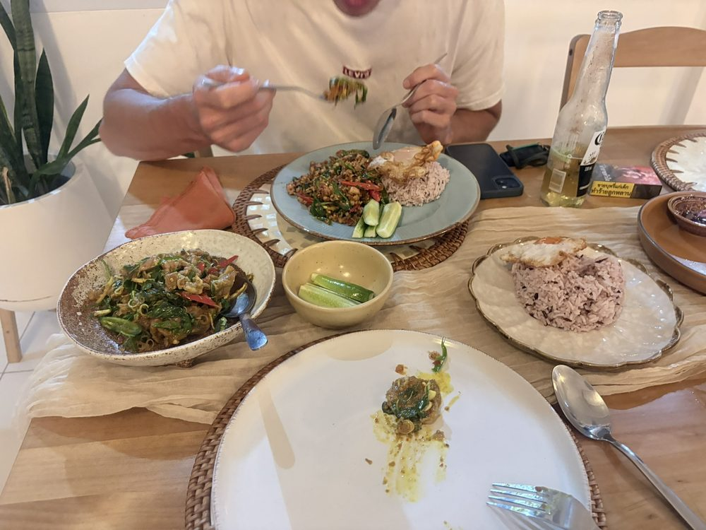
Bootstour um die Insel: Mit dem Longtail-Boot rund um Koh Tao mit Schnorchelstopps. Vorbei an Koh Nang Yuan, drei kleinen Inseln, die bei Ebbe durch eine Sandbank verbunden sind. Auf dem Rückweg ein Regenbogen über dem Dschungel.
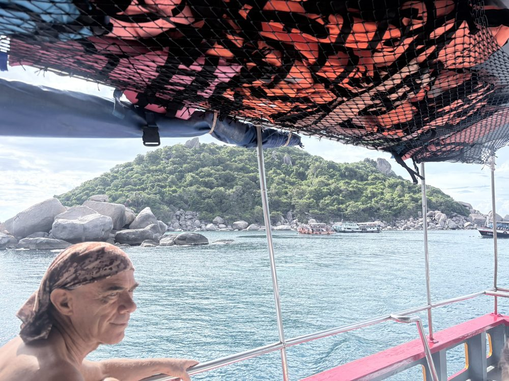
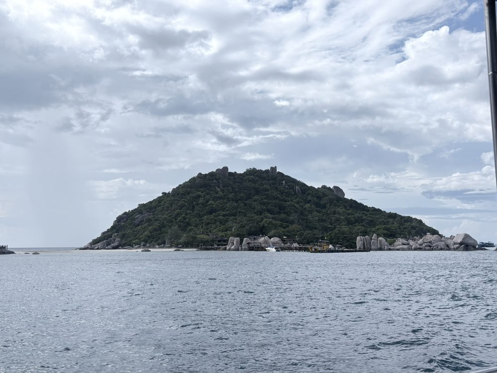
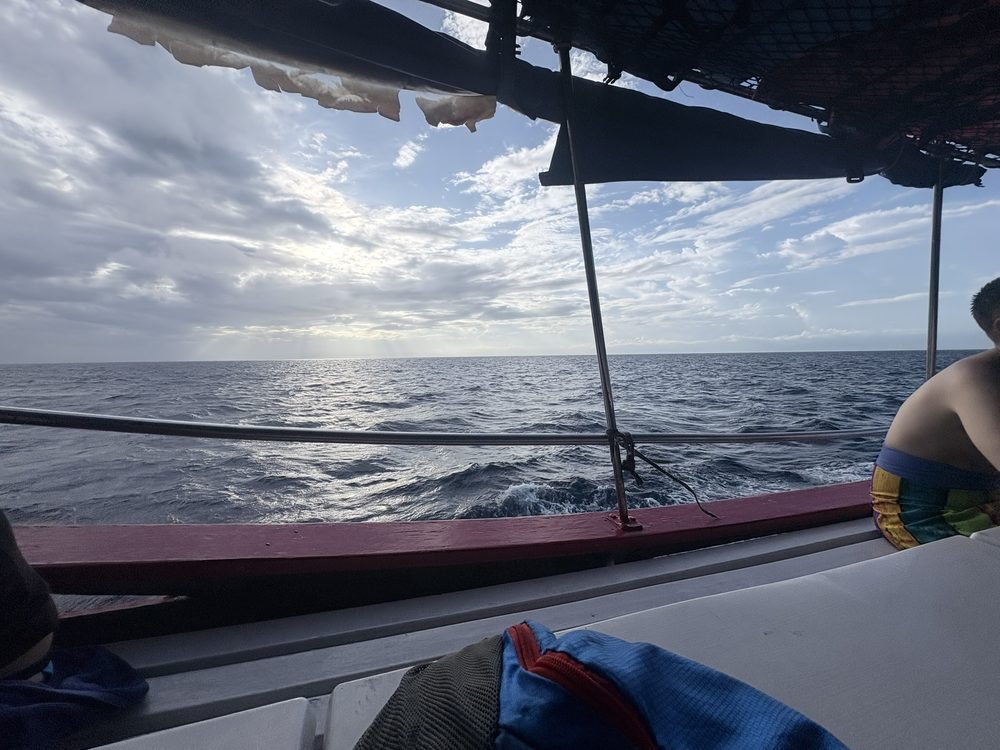
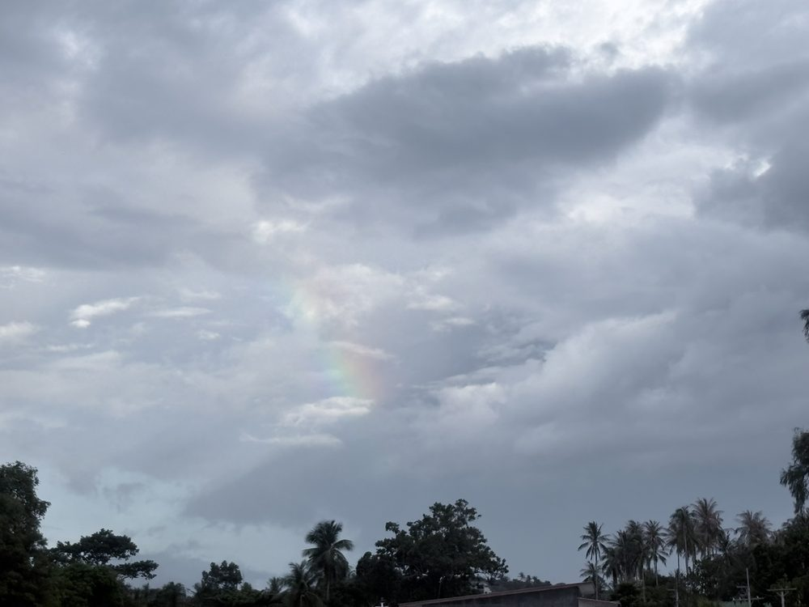
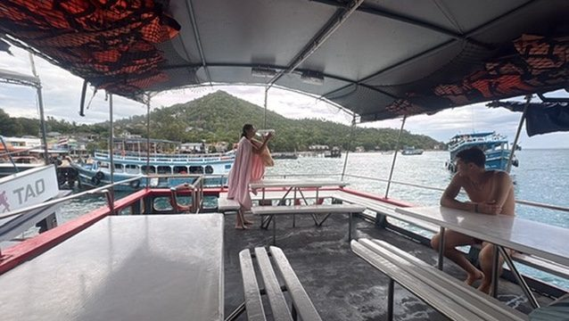